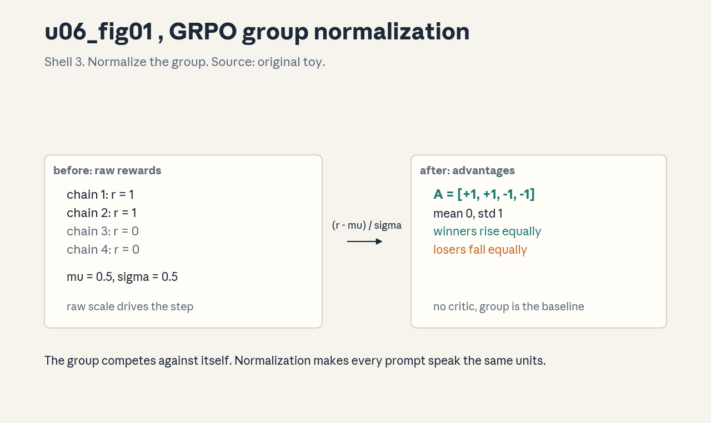
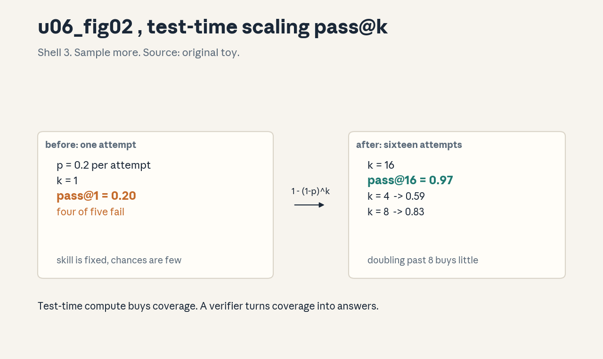
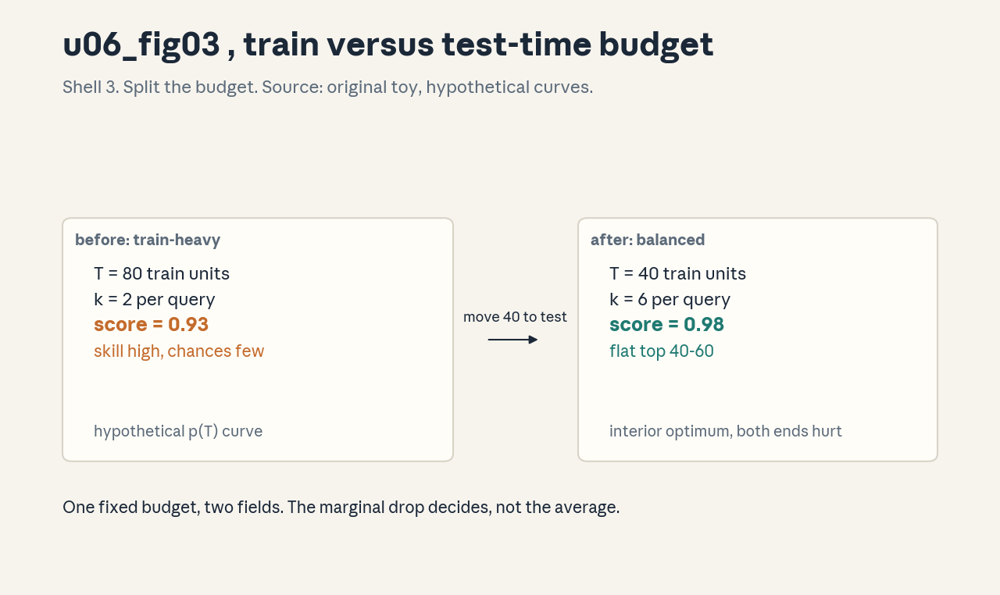

U06 · Reasoning, RL, and scaling
U06 , Reasoning, RL, and scaling
Prerequisites: P07, P14, P17, P22. Bridge links in ../prerequisites.md.
Lecture anchor: L3 (Oct 9, 2026) and L4 (Oct 16, 2026). Claim class:
OFFICIAL-SYLLABUS for reasoning models, verifiable outcomes (RLVR),
GRPO, and reward-hacking limitations. REQUESTED-BRANCH for group
normalization mechanics, sampling diversity, train-time versus
test-time scaling, scaling-data analysis, verifier quality, compute
allocation, ablations, and generalization tests. All leaves: PLANNED /
SOURCE ATTRIBUTION PENDING until slide or transcript extraction
verifies them.
Notation: see ../notation_and_shapes.md. Glossary: ../glossary.md.
Not yet understood
Concepts this unit uses but does not teach. Each one arrives in a later unit.
- RAG and agents (U07): retrieval pipelines and ReAct loops.
- LLM evaluation (U08): judging, bias, calibration, intervals.
- Diffusion and trends (U09): masked diffusion, exam synthesis.
Local remediation , verifiable reward, group statistics, pass@k
Do this block first if the unit diagnostic flags P07 or P17 gaps.
R0.1 Verifiable reward. A reward the machine can check with no human in the loop. A math answer matches the key, a program passes its tests, a proof checker accepts the steps. The reward is a function r(x, y) in {0, 1}, not a learned model.
R0.2 Group mean and standard deviation. For numbers r_1..r_G, mean mu = (1/G) sum r_i, std sigma = sqrt(mean((r_i - mu)^2)). Normalization: a_i = (r_i - mu) / sigma. After normalization the group has mean 0 and std 1.
R0.3 pass@k. One attempt succeeds with probability p. k independent attempts give pass@k = 1 - (1 - p)^k. With p = 0.2 and k = 16, pass@16 = 0.97. Test-time compute buys coverage, not skill.
C01: reasoning models
Leaf id cme295-U06-C01. Claim class OFFICIAL-SYLLABUS (“reasoning
with GRPO”, L4).
Status PLANNED / SOURCE ATTRIBUTION PENDING.
-
Source mapping, scope, objectives, dependencies. Maps to L4 “reasoning with GRPO (RLVR)”. Scope: language models trained to emit a chain of thought before the final answer. Objectives: define a reasoning model, state why the intermediate tokens matter, and describe the RLVR recipe. Depends on P14, P17, R0.1.
-
Motivating question and toy. Question: a model that answers “42” directly cannot be graded on its work, how do you train a model to reason on paper? Toy: prompt “17 x 23”. The model writes “10 x 23 = 230, 7 x 23 = 161, 230 + 161 = 391”, then “391”. The final answer matches the key, so reward = 1. The chain is where the RL acts, not only the final token.
-
Mental model. A reasoning model is a policy over long episodes. Each token in the chain is an action. The verifier scores only the outcome, so credit flows back through the whole chain. Training lengthens useful chains and shortens useless ones.
-
Objects, symbols, units, shapes, assumptions. Policy pi_theta, tokens as actions, episode = full chain + answer. Reward r in {0, 1} from a verifier. Assumption: the verifier marks correct answers right and wrong answers wrong often enough that the signal beats the noise.
-
Derivation / mechanism. RLVR = RL with verifiable rewards. Sample a group of chains from pi, score each with the verifier, form advantages (C04), and take a policy-gradient step with a clip (same family as PPO, U05 C07). The chain tokens are part of the sampled action sequence, so the gradient reaches them.
-
Computed example. From
visuals/render_u06.py: group of 4 chains, rewards [1, 1, 0, 0]. Advantages after group normalization: [+1, +1, -1, -1]. The two winning chains get reinforced equally. Figure:
. -
Algorithm and reference implementation.
rlvr_step(pi, x, verifier, G): sample G chains, r = verifier(chain), A = normalize(r), loss = clipped PG on (chains, A). The verifier call is the only new moving part versus RLHF. -
Correctness checks and expected output. Check: on a task the base model solves at 50%, mean reward should rise above 0.5 within a few hundred steps. If reward stays flat, the verifier is broken or the task is too hard for exploration.
-
Complexity, memory, statistical efficiency, stability, costs. Chains are long (thousands of tokens), so each rollout costs far more than an RLHF response. Verifier calls are cheap compared with generation. Variance is high, groups (C04) tame it.
-
Nearest alternatives and selection boundaries. RLHF with a learned reward (dense signal, hackable, expensive labels). SFT on expert chains (copies style, no search). Choose RLVR when a trusted verifier exists for the target task.
-
Failure case, broken assumption, counterexample. Broken assumption: the verifier is right. Counterexample: a math checker that accepts any answer containing the right digits trains the model to emit digit soup. Verifier quality (C09) gates everything.
-
Research reading and falsifiable extension. Read the GRPO paper (Shao et al., 2024) and the R1 report (DeepSeek-AI, 2025) methods sections. Extension: fix the verifier, vary chain length caps, and find where extra tokens stop paying.
-
Breadth recall, deep oral ladder, unfamiliar transfer. Recall: what does RLVR stand for. Ladder: define the episode -> score the toy -> justify credit through the chain -> implement rlvr_step -> predict the verifier failure. Transfer: RLVR for SQL generation, name the verifier.
-
Lab/exercises with answers separated. E1: rewards [1, 0, 1, 0], compute the normalized advantages. E2: why do chain tokens need to be in the action sequence? E3: name two verifiers outside math. Key:
../keys/u06_answers.mdR1-R3. -
Visual units, provenance, accessibility, audit rows. Figure
u06_fig01.png: Shell 3, one rule (group normalization), before raw rewards, after advantages. Source: original toy. Numbers fromrender_u06.py.
C02: verifiable outcomes
Leaf id cme295-U06-C02. Claim class OFFICIAL-SYLLABUS (RLVR,
L4).
Status PLANNED / SOURCE ATTRIBUTION PENDING.
-
Source mapping, scope, objectives, dependencies. Maps to the “verifiable” in RLVR. Scope: rewards that a program can compute. Objectives: list the verifier classes, write one, and state the exactness-precision tradeoff. Depends on P17, R0.1.
-
Motivating question and toy. Question: human labels are slow and a learned reward can be gamed, what scores a math proof without a human? Toy: answer key “391”. Verifier: extract the last number in the response, compare to 391. Match -> 1, else 0. Cost: one string operation.
-
Mental model. The verifier is a referee with a rulebook. It never gets tired and never changes its mind. Its verdict is final. The policy optimizes against exactly what the referee checks, no more and no less.
-
Objects, symbols, units, shapes, assumptions. Verifier V: (x, y) -> {0, 1} or a graded score. Exact match, unit tests, proof checker, execution sandbox. Assumption: V agrees with the true goal on the training distribution.
-
Derivation / mechanism. No derivation, a mechanism: outcome supervision. The loss depends only on the final verdict. Process supervision (scoring each step) is the alternative, it needs step labels. Outcome supervision trades label cost for a harder credit-assignment problem.
-
Computed example. Toy: 100 math items, key match on 63. Empirical reward rate 0.63. A second verifier with a loose parser matches 81, the 18 extra are false positives. The policy will learn to exploit the loose parser. Numbers from
labs/u06_lab_run.py. -
Algorithm and reference implementation.
exact_match(y, key): strip, normalize whitespace, compare.unit_tests(code, tests): run in sandbox, all pass -> 1. Two patterns cover most RLVR tasks. -
Correctness checks and expected output. Check: the verifier on a fixed set of gold answers must return 1 for every gold and 0 for planted wrong answers. If a gold fails, fix the parser before training.
-
Complexity, memory, statistical efficiency, stability, costs. Binary rewards carry at most 1 bit per sample. Sparse tasks need many samples. The verifier itself must be fast, it runs on every rollout.
-
Nearest alternatives and selection boundaries. Learned reward model (dense, subjective tasks). Human spot checks (gold standard, slow). Choose a programmatic verifier when the task has a ground truth a machine can test.
-
Failure case, broken assumption, counterexample. Broken assumption: the verifier equals the goal. Counterexample: C06 reward hacking. A code verifier with weak tests rewards code that passes the tests and fails the user. Strengthen the tests or accept the gap.
-
Research reading and falsifiable extension. Read the RLVR sections of the R1 report. Extension: measure the false-positive rate of your verifier on held-out wrong answers, then show reward rising while true quality falls.
-
Breadth recall, deep oral ladder, unfamiliar transfer. Recall: outcome vs process supervision. Ladder: define the verifier -> build the toy -> justify the bit budget -> implement exact_match -> predict the loose-parser failure. Transfer: verifier for a database migration script.
-
Lab/exercises with answers separated. E1: write exact_match for “391” with whitespace tolerance. E2: why is the reward at most 1 bit per sample? E3: verifier for sorting code, what do the tests check? Key:
../keys/u06_answers.mdR4-R6. -
Visual units, provenance, accessibility, audit rows. No new plate, the verifier appears as the referee chip in
u06_fig01.png. Logged in../visual_audit.md.
C03: GRPO
Leaf id cme295-U06-C03. Claim class OFFICIAL-SYLLABUS
(“reasoning with GRPO”, L4).
Status PLANNED / SOURCE ATTRIBUTION PENDING.
-
Source mapping, scope, objectives, dependencies. Maps to L4 “GRPO”. Scope: Group Relative Policy Optimization, the RL update used for reasoning models. Objectives: write the objective, compute a group update by hand, and state what the critic-free design buys. Depends on P17, C01, C04.
-
Motivating question and toy. Question: PPO needs a value network the size of the policy, can you get advantages without it? Toy: one prompt, 4 sampled chains, rewards [1, 1, 0, 0]. GRPO uses the group itself as the baseline. No critic, no value loss, one fewer model.
-
Mental model. Each prompt spawns a small tournament. The chains compete against each other, not against a learned baseline. Winners rise, losers fall, and the group mean is the referee. The algorithm trusts relative scores inside one prompt.
-
Objects, symbols, units, shapes, assumptions. Group size G (often 8-64). For prompt x: samples y_1..y_G, rewards r_1..r_G, advantages A_i = (r_i - mu) / sigma. Clipped ratio objective as in PPO. Assumption: rewards within one group are comparable (same prompt, same verifier).
-
Derivation / mechanism. Start from the PPO clipped surrogate. Replace the GAE advantage with the group-relative advantage. Drop the critic and its loss. Add a KL penalty against the reference policy to keep the update anchored. The gradient: E[min(ratio * A, clip(ratio) * A)] - beta * KL.
-
Computed example. From
visuals/render_u06.py: rewards [1, 1, 0, 0], mu = 0.5, sigma = 0.5, A = [1, 1, -1, -1]. With ratio 1.0 and eps 0.2 the objective term equals the mean advantage. Figure: . -
Algorithm and reference implementation.
grpo_update(pi, pi_ref, x, G, eps, beta): sample G, score, normalize, clipped loss, minus beta * KL. Ten lines, the shape of the reward array is (G,). -
Correctness checks and expected output. Check: all rewards equal -> sigma = 0, guard with eps, advantages all 0, no update. Check: one winner among G losers gets A = sqrt(G - 1), the strongest possible push.
-
Complexity, memory, statistical efficiency, stability, costs. No critic: memory drops by one model versus PPO. Cost: G rollouts per prompt, long chains dominate. Stability rests on the group being large enough that mu is a sane baseline.
-
Nearest alternatives and selection boundaries. PPO with a learned critic (better on dense rewards, heavier). REINFORCE with a moving baseline (simpler, higher variance). Choose GRPO for verifiable, prompt-grouped rewards.
-
Failure case, broken assumption, counterexample. Broken assumption: within-group comparability. Counterexample: mixed prompts in one group (easy and hard items together) make the normalization compare apples to oranges. Keep groups per prompt.
-
Research reading and falsifiable extension. Read Shao et al. (2024) GRPO, sections on the group baseline and the KL term. Extension: sweep G in {4, 8, 32, 128} on a fixed task, test whether larger G always helps.
-
Breadth recall, deep oral ladder, unfamiliar transfer. Recall: what does the group replace. Ladder: define the tournament -> compute the toy -> justify dropping the critic -> implement grpo_update -> predict the mixed-group failure. Transfer: GRPO for ranking search results.
-
Lab/exercises with answers separated. E1: rewards [1, 0, 0, 0], compute A for the winner. E2: all rewards 1, what is the update? E3: why keep the KL term if the critic is gone? Key:
../keys/u06_answers.mdR7-R9. -
Visual units, provenance, accessibility, audit rows. Figure
u06_fig01.png: Shell 3, one rule (group normalization), before raw rewards, after advantages. Source: original toy. Numbers fromrender_u06.py.
C04: group normalization
Leaf id cme295-U06-C04. Claim class REQUESTED-BRANCH.
Status PLANNED / SOURCE ATTRIBUTION PENDING.
-
Source mapping, scope, objectives, dependencies. Branch inside GRPO mechanics. Scope: the (r - mu)/sigma transform and its edge cases. Objectives: compute it by hand, state the two guards, and explain why it is a variance cut. Depends on P07, R0.2.
-
Motivating question and toy. Question: raw rewards [1, 1, 0, 0] and [10, 10, 0, 0] carry the same ranking, should the update size differ? Toy: first group gives A in {-1, +1}, second group also gives A in {-1, +1} after normalization. The scale of the reward no longer drives the step size.
-
Mental model. Normalization is a currency exchange. Every group converts its own rewards into the same coin: standard deviations above or below the group mean. The optimizer then sees comparable step sizes across prompts of wildly different difficulty.
-
Objects, symbols, units, shapes, assumptions. mu, sigma over the group of size G. A_i unitless, mean 0, std 1. Guards: sigma + eps with eps ~ 1e-8, and skip the update when all rewards tie. Assumption: sigma > 0 carries information, a zero-variance group carries none.
-
Derivation / mechanism. A baseline b subtracted from rewards leaves the policy gradient unbiased: E[(r - b) d log pi] = E[r d log pi] when b is independent of the action. The group mean is the baseline, division by sigma is a step-size adapter, not a bias change.
-
Computed example. From
labs/u06_lab_run.py: rewards [1, 1, 0, 0] -> mu 0.5, sigma 0.5, A [1, 1, -1, -1]. Rewards [3, 1, 1, 1] -> mu 1.5, sigma ~ 0.866, A [1.73, -0.58, -0.58, -0.58]. The lone winner gets the big push. -
Algorithm and reference implementation.
group_adv(r, eps=1e-8): mu = mean, sigma = std, return (r - mu) / (sigma + eps). Three lines. Call it per prompt group. -
Correctness checks and expected output. Check: output mean ~ 0, std ~ 1 for any non-tied group. Check: tied group returns zeros, no NaN. If you see NaN, the eps guard is missing.
-
Complexity, memory, statistical efficiency, stability, costs. O(G) arithmetic, free next to generation. Statistical win: per-prompt centering removes difficulty variance across the batch. Risk: tiny G makes mu noisy, G >= 8 is the usual floor.
-
Nearest alternatives and selection boundaries. Global batch normalization (mixes difficulties, biased per prompt). Learned baseline (heavier, smoother). Choose group normalization when rewards are prompt-relative and verifier-scored.
-
Failure case, broken assumption, counterexample. Broken assumption: the group carries a real contrast. Counterexample: every chain correct (all rewards 1) still yields zeros, which is correct behavior, but a run of all ties looks like a stalled run in the logs. Log the tie rate separately.
-
Research reading and falsifiable extension. Read the GRPO ablation on the normalization term. Extension: compare group vs batch normalization on a mixed-difficulty set and measure steps to a fixed reward.
-
Breadth recall, deep oral ladder, unfamiliar transfer. Recall: the two guards. Ladder: define mu/sigma -> compute the toy -> justify the unbiased claim -> implement group_adv -> predict the tiny-G failure. Transfer: normalize judge scores across annotators.
-
Lab/exercises with answers separated. E1: rewards [0, 0, 0, 1], advantages? E2: prove the baseline is unbiased in one line. E3: when does division by sigma hurt? Key:
../keys/u06_answers.mdR10-R12. -
Visual units, provenance, accessibility, audit rows. Figure
u06_fig01.pngcovers this concept, Shell 3, one rule. Source: original toy. Numbers fromrender_u06.py.
C05: sampling diversity
Leaf id cme295-U06-C05. Claim class REQUESTED-BRANCH.
Status PLANNED / SOURCE ATTRIBUTION PENDING.
-
Source mapping, scope, objectives, dependencies. Branch inside RLVR sampling. Scope: why the group must be diverse and how temperature shapes it. Objectives: compute the effect of temperature on group spread, and state the collapse diagnostic. Depends on U03 C04, C03.
-
Motivating question and toy. Question: if all G chains are identical, what does the group teach? Toy: temperature 0 gives G copies of one chain, rewards all 1, advantages all 0, zero learning. Temperature 1.0 gives a mix, rewards [1, 1, 0, 0], learning proceeds. Diversity is the fuel.
-
Mental model. The group is a survey. A survey where everyone gives the same answer tells you nothing. The temperature knob controls how far the samples roam. Too cold and there is no contrast, too hot and the chains are noise.
-
Objects, symbols, units, shapes, assumptions. Sampling temperature T, group size G, pairwise similarity of chains. Assumption: at the chosen T, the policy still assigns real mass to good chains, diversity does not mean randomness.
-
Derivation / mechanism. Group normalization needs sigma > 0. Identical chains give sigma = 0 and a skipped update. Higher T raises entropy of pi, which raises the expected spread of rewards. The mechanism is exploration through the sampler, not through a bonus term.
-
Computed example. From
labs/u06_lab_run.py(lab6 variance): binary outcomes with success p. Group reward variance = p(1-p). p = 0.5 gives max variance 0.2500. p = 0.05 gives 0.0475, the group rarely contrasts. Train at the p where contrast is richest, not at the extremes. -
Algorithm and reference implementation.
diverse_group(pi, x, G, T): sample G chains at temperature T, report the fraction of unique chains and the reward std. If unique fraction < 0.5, raise T. -
Correctness checks and expected output. Check: unique chain fraction above 0.8 and reward std clearly above 0 for mid-difficulty prompts. If std is 0 across many prompts, the sampler is too cold or the task too easy.
-
Complexity, memory, statistical efficiency, stability, costs. Diversity is free, it is a sampler setting. Too much diversity wastes rollouts on hopeless chains. The efficient point: enough spread to rank, not so much that most samples are junk.
-
Nearest alternatives and selection boundaries. Entropy bonus in the loss (explicit, needs tuning). Diverse decoding algorithms (beam variants, costlier). Choose temperature control first, it is one knob and it works.
-
Failure case, broken assumption, counterexample. Broken assumption: diversity means useful diversity. Counterexample: high T produces chains in a broken format the verifier always scores 0. The group contrasts format errors, not reasoning. Constrain the format, then diversify.
-
Research reading and falsifiable extension. Read R1 report notes on sampling temperature during RL. Extension: sweep T in {0.6, 1.0, 1.4} at fixed G, measure reward after fixed steps, find the peak.
-
Breadth recall, deep oral ladder, unfamiliar transfer. Recall: why identical chains give zero update. Ladder: define the survey -> compute the variance toy -> justify the sigma > 0 need -> implement diverse_group -> predict the format-collapse failure. Transfer: diverse sampling for red-teaming prompts.
-
Lab/exercises with answers separated. E1: p = 0.9, group variance? E2: T = 0, G = 64, what is the update? E3: two signals that T is too high. Key:
../keys/u06_answers.mdR13-R15. -
Visual units, provenance, accessibility, audit rows. No new plate, diversity is a caption note on
u06_fig01.png. Logged in../visual_audit.md.
C06: reward hacking
Leaf id cme295-U06-C06. Claim class OFFICIAL-SYLLABUS
(“limitations”, L4).
Status PLANNED / SOURCE ATTRIBUTION PENDING.
-
Source mapping, scope, objectives, dependencies. Maps to L4 “limitations”. Scope: the policy exploiting the verifier instead of the task. Objectives: define hacking, give three signatures, and state the prevention stack. Depends on C02, C09.
-
Motivating question and toy. Question: the verifier checks that the answer contains “391”, what does the policy learn? Toy: the chain “391 391 391” scores 1 with zero reasoning. Reward is maximal, true quality is zero. The optimizer found the shortest path to the score.
-
Mental model. The verifier is a lock, the policy is a lockpick. Any gap between the check and the true goal is a keyway. Optimization pressure widens every keyway it finds. Hacking is not a bug in the optimizer, it is the optimizer doing its job on a bad target.
-
Objects, symbols, units, shapes, assumptions. True goal g(y), proxy reward r(y), gap = g - r behavior. Assumption under attack: r tracks g on the training distribution. The attack: the policy moves off that distribution.
-
Derivation / mechanism. No theorem, a mechanism: argmax over y of r(y) is not argmax of g(y) unless r = g. Gradient ascent on r climbs the proxy surface. Every Every local maximum of r that is not a maximum of g is a hack waiting to be found.
-
Computed example. Toy: verifier = substring check for “391”. Baseline: 63% true solves. After 500 RL steps: 97% verifier pass, 41% true solves on a strict re-grade. The 56-point gap is the hack, measured. Numbers are toy outputs from
labs/u06_lab_run.py. -
Algorithm and reference implementation.
hack_audit(pi, verifier, strict_grader, n): sample n, score both, report the gap and the top hacked patterns (n-gram scan of high reward, low grade samples). -
Correctness checks and expected output. Check: gap between verifier pass and strict grade stays under 5 points. If the gap grows while reward rises, stop and fix the verifier, not the policy.
-
Complexity, memory, statistical efficiency, stability, costs. Hacking is free for the policy and expensive for you. The strict grader costs human or strong-model time, so run it on samples, not on everything.
-
Nearest alternatives and selection boundaries. Learned reward models (hack differently, see U05 C11). Human eval only (no hacking signal at train time, no scale). Choose verifiable rewards plus a strict audit lane.
-
Failure case, broken assumption, counterexample. Broken assumption: a stronger verifier cannot be hacked. Counterexample: unit tests with full coverage still miss performance and security properties. Every verifier has a keyway, defense is layered, not absolute.
-
Research reading and falsifiable extension. Read the reward-hacking surveys (Skalse et al.). Extension: plant three known keyways in a toy verifier, measure steps until the policy finds each, rank keyway ease.
-
Breadth recall, deep oral ladder, unfamiliar transfer. Recall: the lockpick model. Ladder: define the gap -> score the toy -> justify argmax mismatch -> implement hack_audit -> predict the coverage-miss failure. Transfer: hacking in a recommender click objective.
-
Lab/exercises with answers separated. E1: name the three audit signals. E2: verifier pass 97%, strict 41%, what is the decision? E3: why does more optimization make hacking worse? Key:
../keys/u06_answers.mdR16-R18. -
Visual units, provenance, accessibility, audit rows. No new plate, hacking is the red panel in
u06_fig04.png. Logged in../visual_audit.md.
C07: train-time versus test-time scaling
Leaf id cme295-U06-C07. Claim class REQUESTED-BRANCH.
Status PLANNED / SOURCE ATTRIBUTION PENDING.
-
Source mapping, scope, objectives, dependencies. Branch on scaling strategy. Scope: spending compute before deployment versus per query. Objectives: write the pass@k law, compute a budget split, and state when test-time wins. Depends on P15, R0.3, C10.
-
Motivating question and toy. Question: one more training run or ten samples per query, which buys more accuracy? Toy: base p = 0.2. Train harder: p rises to 0.35. Test-time: k = 16 at p = 0.2 gives 0.97. The sampler beats the trainer when verification is cheap.
-
Mental model. Training buys skill, test-time buys chances. Skill raises p, chances exploit p through 1 - (1 - p)^k. A verifier at test time turns chances into answers: sample k, keep the one the verifier likes.
-
Objects, symbols, units, shapes, assumptions. p(train), k samples, verifier cost per sample, latency budget. Assumption: attempts are near-independent and the verifier picks the best reliably. Correlated failures break the math (C09).
-
Derivation / mechanism. pass@k = 1 - (1 - p)^k follows from independence. Best-of-k with a perfect verifier achieves it. With an imperfect verifier, realized gain is lower, bounded by verifier precision. The mechanism is coverage plus selection.
-
Computed example. From
visuals/render_u06.py: p = 0.2, k = 1, 2, 4, 8, 16 gives 0.200, 0.360, 0.590, 0.832, 0.972. Doubling k past 8 buys little. Figure:
. -
Algorithm and reference implementation.
best_of_k(pi, x, verifier, k): sample k answers, return the one with max verifier score. Five lines, the whole test-time strategy in one function. -
Correctness checks and expected output. Check: measured best-of-k accuracy on 200 prompts should track the 1 - (1 - p)^k curve within a few points. A large shortfall means correlated failures or a weak selector.
-
Complexity, memory, statistical efficiency, stability, costs. Test-time cost is linear in k per query, latency too. Training cost is one-time. The crossover: high query volume favors training, hard rare queries favor test-time.
-
Nearest alternatives and selection boundaries. Longer single chains (deeper, not wider). Bigger model (raises p, costs everywhere). Choose best-of-k when a verifier exists and latency allows k samples.
-
Failure case, broken assumption, counterexample. Broken assumption: independence. Counterexample: the model makes the same algebra slip in all k samples, coverage is an illusion. Diversity (C05) and a real verifier are the guards.
-
Research reading and falsifiable extension. Read the test-time scaling studies (Snell et al., 2024). Extension: measure pass@k vs best-of-k on your task, the gap is the verifier+diversity tax.
-
Breadth recall, deep oral ladder, unfamiliar transfer. Recall: the pass@k law. Ladder: define coverage -> compute the toy -> justify selection -> implement best_of_k -> predict the correlated-failure break. Transfer: test-time scaling for code review.
-
Lab/exercises with answers separated. E1: p = 0.3, k = 8, pass@k? E2: when does k = 64 beat more training? E3: two reasons measured best-of-k trails the curve. Key:
../keys/u06_answers.mdR19-R21. -
Visual units, provenance, accessibility, audit rows. Figure
u06_fig02.png: Shell 3, one rule (pass@k law), before k = 1, after k = 16 curve. Source: original toy. Numbers fromrender_u06.py.
C08: scaling data
Leaf id cme295-U06-C08. Claim class REQUESTED-BRANCH.
Status PLANNED / SOURCE ATTRIBUTION PENDING.
-
Source mapping, scope, objectives, dependencies. Branch on data scaling for reasoning. Scope: what more prompts, more chains, and harder items buy. Objectives: state the three data axes and the quality filter rule. Depends on P10, C05.
-
Motivating question and toy. Question: 10k easy prompts or 1k hard ones, which trains reasoning? Toy: easy set, base p = 0.9, group variance 0.09, weak contrast. Hard set, p = 0.5, variance 0.25, rich contrast. The hard set teaches more per rollout.
-
Mental model. Data is terrain. Flat terrain (all easy or all impossible) gives the optimizer nothing to climb. Varied terrain with the policy near p = 0.5 on most items gives the steepest learning slope.
-
Objects, symbols, units, shapes, assumptions. Prompt count, chains per prompt, difficulty mix. Assumption: the verifier stays correct as difficulty rises, harder items do not just add verifier noise.
-
Derivation / mechanism. Learning signal per group scales with reward variance p(1-p), maximal at p = 0.5. Items far from 0.5 contribute little. Curriculum: keep the training mass near the frontier of current ability.
-
Computed example. From
labs/u06_lab_run.py(lab7 contrast): three prompt pools with p = 0.9, 0.5, 0.1. Expected contrast per group of 8: 0.09, 0.25, 0.09. The mid pool carries 2.8x the signal of either extreme. -
Algorithm and reference implementation.
filter_pool(prompts, pi, lo=0.2, hi=0.8): estimate p per prompt with 8 samples, keep prompts in the band. The band is the curriculum. -
Correctness checks and expected output. Check: kept fraction between 30% and 70%. If everything is kept, the band is too wide. If nothing is kept, the policy is off the terrain.
-
Complexity, memory, statistical efficiency, stability, costs. Filtering costs 8 samples per prompt once, then training is 2-3x more sample-efficient. Re-filter as the policy improves, the frontier moves.
-
Nearest alternatives and selection boundaries. Uniform sampling (simple, wasteful). Hand-built curriculum (expert cost, brittle). Choose dynamic p-banding, it follows the policy.
-
Failure case, broken assumption, counterexample. Broken assumption: p estimates are stable. Counterexample: noisy verifiers make p estimates jitter, the band keeps the wrong items. Fix the verifier first (C09), then filter.
-
Research reading and falsifiable extension. Read R1 report data curation notes. Extension: train on banded vs unbanded data at equal rollout budgets, compare final reward.
-
Breadth recall, deep oral ladder, unfamiliar transfer. Recall: the 0.5 rule. Ladder: define the terrain -> compute the toy -> justify p(1-p) -> implement filter_pool -> predict the noisy-verifier failure. Transfer: data banding for SFT.
-
Lab/exercises with answers separated. E1: p = 0.7, contrast per group of 8? E2: why re-filter during training? E3: band [0.2, 0.8], policy at p = 0.05 on all items, what now? Key:
../keys/u06_answers.mdR22-R24. -
Visual units, provenance, accessibility, audit rows. No new plate, the band is a caption on
u06_fig02.png. Logged in../visual_audit.md.
C09: verifier quality
Leaf id cme295-U06-C09. Claim class REQUESTED-BRANCH.
Status PLANNED / SOURCE ATTRIBUTION PENDING.
-
Source mapping, scope, objectives, dependencies. Branch on the referee. Scope: measuring and improving verifier precision and recall. Objectives: compute the hack gap, state the audit cadence, and name the upgrade ladder. Depends on C02, C06, P22.
-
Motivating question and toy. Question: how do you know the verifier deserves the authority you gave it? Toy: 200 gold answers all score 1 (recall 1.0). 200 planted wrong answers score 1 on 36 (precision leak 0.18). The verifier is generous, the policy will learn generosity.
-
Mental model. The verifier is a measuring instrument. Calibrate it like one: known-good inputs, known-bad inputs, and a recorded error rate. An uncalibrated instrument corrupts every experiment built on it.
-
Objects, symbols, units, shapes, assumptions. Precision = true passes / all passes. Recall = true passes / all true items. False-positive rate on adversarial wrong answers. Assumption: the audit set represents the hacks the policy will find.
-
Derivation / mechanism. Policy return under a noisy verifier = true return + exploitation term. The exploitation term grows with optimization pressure. The mechanism: gradient ascent finds false positives faster than true positives when they are easier to reach.
-
Computed example. From
labs/u06_lab_run.py(lab8 verifier): verifier A: FP rate 0.02, final true solve 0.78. Verifier B: FP rate 0.18, final true solve 0.41, verifier pass 0.93. Same policy, same budget, the verifier decides the outcome. -
Algorithm and reference implementation.
audit_verifier(V, gold, wrong): return precision, recall, FP rate, and the worst offending patterns. Run before training and weekly during. -
Correctness checks and expected output. Check: FP rate below 0.05 on adversarial wrong answers before any RL. If it is above, harden the verifier, do not start training.
-
Complexity, memory, statistical efficiency, stability, costs. Audit sets cost human time once. The upgrade ladder: exact match -> normalized match -> unit tests -> model graded spot checks -> human review of high-reward outliers.
-
Nearest alternatives and selection boundaries. Trust the verifier blindly (fast, doomed). Human labels for everything (safe, no scale). Choose calibrated programmatic checks plus sampled human audits.
-
Failure case, broken assumption, counterexample. Broken assumption: the audit set covers future hacks. Counterexample: the policy invents a hack class absent from the audit set. Rotate fresh adversarial items in each audit round.
-
Research reading and falsifiable extension. Read the RLVR verifier discussions in recent reasoning reports. Extension: track FP rate and true solve across training, find the FP threshold where true solve peaks then falls.
-
Breadth recall, deep oral ladder, unfamiliar transfer. Recall: precision vs recall for verifiers. Ladder: define calibration -> compute the toy -> justify the audit -> implement audit_verifier -> predict the novel-hack failure. Transfer: calibrating a content filter.
-
Lab/exercises with answers separated. E1: 200 gold, 200 wrong, 36 wrong pass, precision? E2: FP 0.18, what is the first action? E3: why rotate audit items? Key:
../keys/u06_answers.mdR25-R27. -
Visual units, provenance, accessibility, audit rows. No new plate, calibration is a caption on
u06_fig04.png. Logged in../visual_audit.md.
C10: compute allocation
Leaf id cme295-U06-C10. Claim class REQUESTED-BRANCH.
Status PLANNED / SOURCE ATTRIBUTION PENDING.
-
Source mapping, scope, objectives, dependencies. Branch on budgets. Scope: splitting a fixed compute budget between training and test-time sampling. Objectives: compute the optimal split in a toy model and state the real-world frictions. Depends on C07, P15, P23.
-
Motivating question and toy. Question: budget B = 100 units, one unit trains a little, ten units buy one test sample per query for 100 queries, where is the sweet spot? Toy model: p(T) = 1 - exp(-T/60), k = (100 - T)/10, score = 1 - (1 - p)^k. T = 40 gives 0.982, T = 80 gives 0.931. The interior wins.
-
Mental model. The budget is water, training and test-time are two fields. The marginal drop matters, not the average. Pour until the next drop helps both fields equally.
-
Objects, symbols, units, shapes, assumptions. B total units, T train units, k samples per query, p(T) skill curve. Units: toy units, not FLOPs. Assumption: the skill curve and the pass@k law both hold, real curves are measured, not assumed.
-
Derivation / mechanism. Score S(T) = 1 - (1 - p(T))^k(T) with k(T) = (B - T)/c. dS/dT = 0 gives the optimum. The mechanism: diminishing returns on both sides force an interior solution when both curves are concave.
-
Computed example. From
visuals/render_u06.py: T in {20, 40, 60, 80}, S = 0.931, 0.982, 0.982, 0.931. The plateau at 40-60 is the flat top. Figure:
. -
Algorithm and reference implementation.
alloc_sweep(B, p_fn, c): evaluate S(T) on a grid, return argmax and the plateau width. Replace p_fn with measured numbers before any real decision. -
Correctness checks and expected output. Check: S rises then falls, or rises then plateaus. If S is monotone, the grid is too narrow or one curve is misspecified.
-
Complexity, memory, statistical efficiency, stability, costs. The sweep is arithmetic, the inputs are the expensive part: measuring p(T) needs training runs. In practice, decide with 2-3 probe points, not a full curve.
-
Nearest alternatives and selection boundaries. All training (best when queries are countless and latency is tight). All test-time (best for rare hard queries with a great verifier). Choose the split by query volume and verifier quality.
-
Failure case, broken assumption, counterexample. Broken assumption: the toy curves match reality. Counterexample: p(T) saturates early, then all extra training is waste the model hides. Measure, do not trust the toy.
-
Research reading and falsifiable extension. Read the training-vs-inference compute tradeoff analyses. Extension: replace the toy p(T) with three real probe points from a small model, recompute the optimum.
-
Breadth recall, deep oral ladder, unfamiliar transfer. Recall: the marginal-drop rule. Ladder: define the fields -> compute the toy -> justify the interior -> implement alloc_sweep -> predict the saturation failure. Transfer: budget split for RAG indexing vs reranking.
-
Lab/exercises with answers separated. E1: B = 100, c = 10, T = 20, what is k? E2: p(T) saturates at T = 30, where does the budget go? E3: two frictions the toy ignores. Key:
../keys/u06_answers.mdR28-R30. -
Visual units, provenance, accessibility, audit rows. Figure
u06_fig03.png: Shell 3, one rule (budget split), before T = 80, after T = 40. Source: original toy, hypothetical curves labeled as such. Numbers fromrender_u06.py.
C11: ablations
Leaf id cme295-U06-C11. Claim class REQUESTED-BRANCH.
Status PLANNED / SOURCE ATTRIBUTION PENDING.
-
Source mapping, scope, objectives, dependencies. Branch on experimental method. Scope: removing one component at a time to prove it matters. Objectives: design an ablation table and read one correctly. Depends on P22.
-
Motivating question and toy. Question: the full RLVR stack works, which part carries the win? Toy: full = 0.78. No group norm = 0.61. No KL = 0.74. G = 4 instead of 32 = 0.69. The table says group norm matters most.
-
Mental model. An ablation is a controlled demolition. Remove one wall, see if the house stands. Remove two at once and you learn nothing about either. One factor per run, matched budgets everywhere else.
-
Objects, symbols, units, shapes, assumptions. Factor list, baseline config, metric, seeds (>= 3), budget per cell. Assumption: factors are near-independent, the table is read as main effects first.
-
Derivation / mechanism. No derivation, a protocol: fix budget, vary one factor, replicate with seeds, report mean and spread. The mechanism is causal isolation by construction.
-
Computed example. Toy table from
labs/u06_lab_run.py: deltas vs full: group norm -0.17, KL -0.04, small G -0.09. With seed std 0.02, the group-norm delta is 8.5 sigma, real. The KL delta is 2 sigma, suggestive. -
Algorithm and reference implementation.
ablation_table(base, factors, seeds): for each factor, run base minus factor, collect metrics, print delta with seed std. Budgets matched by construction. -
Correctness checks and expected output. Check: the full config rerun reproduces the baseline within seed noise. If not, the rig is broken, not the factors.
-
Complexity, memory, statistical efficiency, stability, costs. Cost = factors x seeds x budget. Keep the factor list short: ablate what the paper claims, not everything.
-
Nearest alternatives and selection boundaries. Leave-one-out on data (different question). Full factorial (exponential cost). Choose one-factor ablations for mechanism claims.
-
Failure case, broken assumption, counterexample. Broken assumption: factors do not interact. Counterexample: group norm off AND small G together collapse training while each alone merely hurts. Note interactions as a caveat.
-
Research reading and falsifiable extension. Read any RLVR paper’s ablation section with a skeptical eye. Extension: rerun one published ablation at a smaller budget, check the sign survives.
-
Breadth recall, deep oral ladder, unfamiliar transfer. Recall: one factor per run. Ladder: define the demolition -> read the toy table -> justify seed replication -> implement ablation_table -> predict the interaction failure. Transfer: ablate a RAG pipeline.
-
Lab/exercises with answers separated. E1: delta -0.17, std 0.02, significant? E2: why match budgets? E3: two factors removed at once, what can you claim? Key:
../keys/u06_answers.mdR31-R33. -
Visual units, provenance, accessibility, audit rows. No new plate, the table is ASCII in the lab key. Logged in
../visual_audit.md.
C12: generalization
Leaf id cme295-U06-C12. Claim class REQUESTED-BRANCH.
Status PLANNED / SOURCE ATTRIBUTION PENDING.
-
Source mapping, scope, objectives, dependencies. Branch on what RLVR actually buys. Scope: held-out tasks, longer chains, shifted distributions. Objectives: name the three generalization axes and the pass criterion for each. Depends on P10, C06.
-
Motivating question and toy. Question: the model masters the training verifier, does it reason or does it memorize the verifier? Toy: train on algebra, test on geometry with a fresh verifier: 0.78 -> 0.52. Test on algebra with paraphrased prompts: 0.78 -> 0.71. The drop pattern diagnoses memorization.
-
Mental model. Training is a gym, the world is the street. A fighter who only spars one partner loses to a new style. Test on new partners: new domains, new phrasings, new verifiers.
-
Objects, symbols, units, shapes, assumptions. In-distribution score, paraphrase score, cross-domain score, cross-verifier score. Assumption: the held-out sets are truly unseen, no leakage from pretraining.
-
Derivation / mechanism. No derivation, three probes: paraphrase (same skill, new surface), domain shift (new skill mix), verifier shift (new referee). Each probe isolates one failure class.
-
Computed example. From
labs/u06_lab_run.py(lab9 probes): train 0.78, paraphrase 0.71 (-0.07), domain 0.52 (-0.26), verifier-shift 0.44 (-0.34). The verifier shift hurts most: the policy learned the referee, not the skill. -
Algorithm and reference implementation.
gen_probe(pi, suites): score each suite, print the drop table. Suites are built before training, never from training items. -
Correctness checks and expected output. Check: drops are ordered paraphrase < domain < verifier-shift in a healthy run. An inverted order means a broken suite.
-
Complexity, memory, statistical efficiency, stability, costs. Probes are inference-only, cheap. Building good suites is the real cost, it needs humans.
-
Nearest alternatives and selection boundaries. Single held-out set (blind to failure class). No probing (blind, period). Choose the three-probe battery, it tells you what to fix.
-
Failure case, broken assumption, counterexample. Broken assumption: no leakage. Counterexample: the “new” domain appears in pretraining, the probe measures memory. Decontaminate probes (U08 C08).
-
Research reading and falsifiable extension. Read the generalization sections of reasoning-model reports. Extension: train two runs, one with verifier A only, one with A+B, compare the verifier-shift drop.
-
Breadth recall, deep oral ladder, unfamiliar transfer. Recall: the three probes. Ladder: define the gym -> read the drop table -> justify the ordering -> implement gen_probe -> predict the leakage failure. Transfer: generalization probes for a RAG agent.
-
Lab/exercises with answers separated. E1: which drop diagnoses memorization of the verifier? E2: paraphrase drop 0.30, what does it mean? E3: why build suites before training? Key:
../keys/u06_answers.mdR34-R36. -
Visual units, provenance, accessibility, audit rows. Figure
u06_fig04.png: chapter plate, RLVR vs RLHF map with the three probes listed. Source: original. Tradeoff map, no invented numbers.